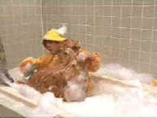

|
Air Bud/B,B |
|
Disney/1997/98m/FS 1.33 |
|
Stories about boys and their dogs have held audience
appeal since the inception of motion pictures. Air Bud has a cute gimmick. Josh finds a
stray that has the unique ability to put a basketball through the hoop with uncaninely accuracy.
Josh is new to the neighborhood and the dog helps the Josh become part of the team. One of the
nicest aspects of the movie is how Josh finds out about the past of the school custodian and the
knowledge changes both their lives.
The acrimonious nature of the villainous conflict featuring an antic and
nasty Michael Jeter as a clown brings the film down a peg. It feels as if this was the easy way to
create tension.
Youngster Kevin Zegers does appealing work as Josh and Bill Cobbs shows
lots of style as the custodian. Charles Martin Smith directs with a good share of charm and energy.
 |
|
Washin' the dog. ©Disney |
Air Bud
is presented in 1.33 Full Frame. Compositions do not seem cramped or otherwise compromised,
suggesting that the director was careful to protect for 1.33 while composing for 1.85. Color is
vivid and detail is consistently sharp. Take a careful look at Josh's white basketball for some
MPEG for an example of live MPEG grain. Fortunately, there is not too much incidence of this in the
transfer.
|
|
|


Apocalypse Now is Coppola's distorted vision of war now on DVD in
gorgeous anamorphic images.

Tucker: The Man and His Dream is beautifully filmed with loving attention to detail.

Selections from the feature archive include articles on Akira Kurosawa,
Frank Darabont, Blonde Bimbos, Hollywood
Street Gangs, or Vietnam:
The Hollywood Pariah, and many more....
Sturges Emerges
Preston Sturges was Hollywood's resident comic genius for more than a decade. His movies are
timeless. Click on his image to read all about it.
 Why
do Al Pacino, Gene Hackman, Pat O'Brien and Goldie Hawn fall into a select group of actors? Find
out more by clicking the Hollywood
on the Sidelines symbol. Why
do Al Pacino, Gene Hackman, Pat O'Brien and Goldie Hawn fall into a select group of actors? Find
out more by clicking the Hollywood
on the Sidelines symbol.

Movie Rage: Death in the Aisles
Everyone knows what it feels like to get angry at the
movies these days. Here's a humorous but not so delightful view of big screen misery.
 
DVDPlanet is the DVD
incarnation of legendary laser retailer Ken Crane's. Deep discounts and serious service.

Elegant DVD portal with news, reviews, links and information
galore.

Many movie related links in an easy interface. You can even rate
the sites.

Great site for DVD followers. Lots of
information, some speculation, opinion, and reviews all bundled in a sparkling interface.
|